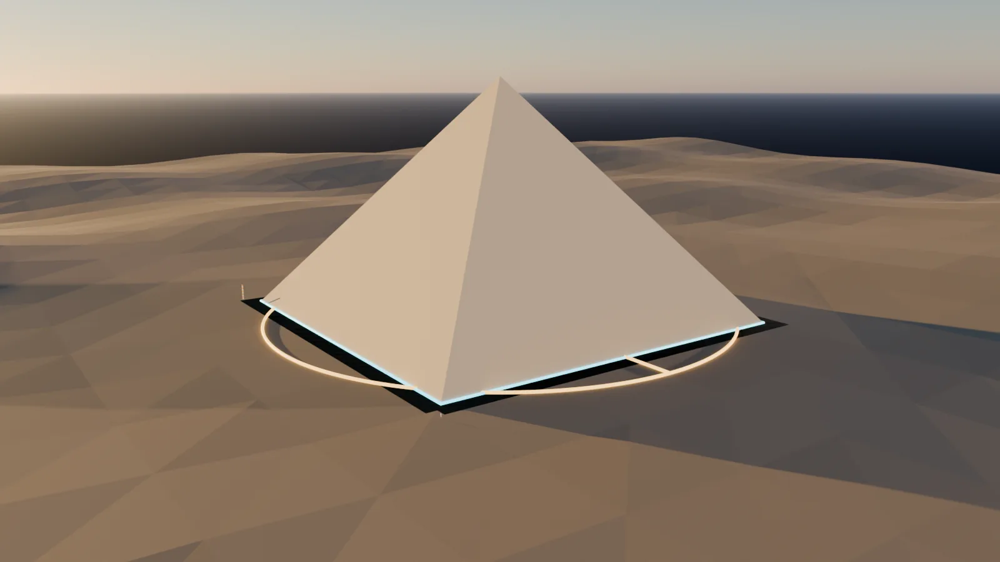

9 the claim as told · 9 digits that really match, character for character · 9 digits that do not
Backdrop: Cycles still of this page's scene after a round trip through Blender 5.3 and x3d-blender-io 8310e7b (see the witness below). The gold ring is the circle of radius = height.
FIELD INSTRUMENT 03 · X3D 4.0
A monument. A thousand ways to look.
Measure the geometry. Move the Sun. Challenge the numbers.
A reconstructed casing envelope becomes a live scientific
instrument. Every striking resemblance is an invitation to test a
model; numerical agreement alone does not establish the builders’
intent.
BASE SIDE230.363 mDash 2015 mean casing base
RECONSTRUCTED HEIGHT146.721 mderived from base × slope
FACE SLOPE51.8667°5.492 palms / cubit
ENCLOSED VOLUME2.595 ×10⁶ m³ideal full envelope, no voids
PERIMETER − 2πh−0.420 msmall residual, large lesson
The 3D renderer is unavailable. All analytical instruments
below remain usable.
INITIALIZING X3DOBLIQUE / RECONSTRUCTED CASING
THE MEASURED MONUMENTA square. A slope. A circle.
Y ↑ / N −Z1 UNIT = 1 METREREFERENCE GEOMETRY
Reconstructed full casing · courses and terrain are illustrative
· drag to orbit, scroll to zoom
height-radius circle square & measurementsSUN ALT 37.8° · AZ 243.4°
05 / SLOPE MICROSCOPE50–54°
Almost the same is not identical.
Exact π, exact φ and a 5½-palm seked sit close together. The shaded
range is Petrie’s reported ±2′ slope range, used as an illustrative
interval.
Vertical deviations normalized to each target, in percent. The gray
band is a reported historical range, not a calibrated probability
distribution.
06 / SURVEY INTERVALSDASH 2015
The square is an idealization.
Four reconstructed casing sides, with their published 95% interval
endpoints. These are side estimates, not four direct measurements of
surviving corners.
Mean of the four central estimates: 230.3635 m (published mean
230.363 m). Bounds are asymmetric. Side spread does not supply a
Gaussian standard deviation.
07 / GEODESY BENCHILLUSTRATIVE COORDINATES
Move the point. Change the digits.
The famous 29.9792458° line crosses this coordinate model. A
specific point, datum and uncertainty are essential before
interpreting any digits.
29.9792458° Nnear the selected numerical target
Centre 29.979175° from v1 mapping references; not a new geodetic
solution. Each 10⁻⁷° step ≈ 1.11 cm. Modern SI units and decimal
degrees determine this resemblance.
AERA’s measured geodetic control ↗
08 / SOLAR GEOMETRYLOCAL SOLAR TIME
The pyramid as a light instrument.
Explore seasonal paths at 29.979° north. The gold point follows the
lighting controls; the 3D apex projection shows how altitude becomes
a ground distance.
AZIMUTH 243.4°ALTITUDE 37.8°h / tan(alt) 189 m
Geometric Sun, no refraction, terrain or ephemeris. Solar time
differs from civil clock time. Projected shadow is an ideal
parallel-ray construction.
09 / SENSITIVITY LABEXPLICIT ASSUMPTIONS
Uncertainty is a model you must specify.
Try a hypothetical joint Gaussian model for base and
independently estimated height. Correlation matters. These
controls are an experiment, not a reanalysis of the
archaeological surveys.
If height is derived as h = (b/2) tan θ, then 2b/h = 4/tan θ:
base cancels. Do not assign b and h independent survey errors in
that model.
10 / CONSTRUCTION SCALEIDEAL SOLID MODEL
Most of the work is near the ground.
An ideal pyramid holds 87.5% of its volume below half-height. Its
centre of mass is h/4. Change assumed density and block mass to
explore scale, rather than infer an actual construction schedule.
ENVELOPE MASS 6.75 MtBLOCK EQUIVALENTS 2.70 MIDEAL LIFT ENERGY 2.43 TJ
M = ρV; E = Mg(h/4), using g = 9.80665 m/s². No voids, bedrock core,
material variation, quarrying, transport, friction or human
efficiency. This is gravitational potential energy, not total
construction energy.
11 / UNITS & INVARIANTSSAME GEOMETRY
Some numbers survive a change of units.
Lengths change their numerical values when the unit changes.
Dimensionless ratios survive. That distinction separates geometric
relationships from coincidences chosen in feet, miles or modern SI
digits.
Quantity
Metres
Feet
Royal cubits*
2b / h3.140160in every consistent length unit
VACUUM LIGHT SPEED
299,792,458 m/s
983,571,056.43 ft/s
1 foot = 0.3048 m exactly. *Illustrative cubit = 0.5236 m, a
selected historical length model rather than a universal exact unit.
c is exact in SI; its digit string changes with the unit.
12 / THE COINCIDENCE ENGINELOOK-ELSEWHERE
Find your own speed of light.
The engine does what every numerology chart does, only honestly: it measures a pyramid in ten length
units, inverts, divides one length by another, reads the latitude, and checks every result against
sixteen famous constants. It then counts how many "discoveries" pure chance should have produced.
Dimensions: . Others are commonly cited, rounded values, used as controls. Every power of ten is free (2.99, 29.9 and 299 all count as c).
NUMBERS TRIED0
COMPARISONS0
DISCOVERIES0
CHANCE ALONE0
Targets: . Chance model: a number built from arbitrary units has a log-uniform mantissa (Benford), so it starts with the first d digits of a target t with probability log₁₀(1 + 10¹⁻ᵈ / t_d). Tries are correlated (one slope feeds many ratios), so this is a teaching yardstick, not a p-value. Ratios fixed by the square alone (diagonal ÷ side = √2) are left out.
13 / THE SKY'S OWN COINCIDENCEREAL, AND TEMPORARY
The Moon fits the Sun. For now.
Here is a coincidence that does not depend on a unit: the Sun is about 400 times wider than the Moon
and about 389 times further away, so in our sky they look almost exactly the same size. That is why
total eclipses happen. The Moon drifts away about 3.8 cm a year, so the fit is temporary.
Geocentric angular diameters in arcminutes; perigee 356,400 km and apogee 406,700 km; Sun at 147.1 and 152.1 million km; IAU nominal solar radius 695,700 km. The recession is extrapolated linearly at today's rate, which has not been constant, so read the time axis as illustrative. On that reading the last total eclipse is about 600 million years away.
Number
Miles
Kilometres
Claimed
Literal digits
The 864 / 432 / 108 family appears in miles because the statute mile (1593) is 5,280 feet. In kilometres it disappears. The 400 : 400 pair survives any unit, which makes it the real coincidence on this page.
14 / THE EVIDENCE ATLAS
Keep the wonder. Inspect the claim.
All 27 original claims are retained for inspection. Badges below
describe the kind of claim, not a probability of historical intent.
Original v1 verdicts are preserved in the downloadable receipt and
critically reviewed here.
27 claims
Claim / interpretation
Claimed
Reference value
Difference
Evidence class
No claims match. Clear the search or select all domains.
THE INSTRUMENT’S LIMITS
Precision on screen. Honesty in the model.
The full casing is reconstructed from a mean base and a reported
historical slope. Courses, terrain, chambers and the coordinate
transect are visual models. This is neither a scan nor a new survey.
The original Blender export remains available as a selectable
reference scene. The Observatory’s enhanced geometry is generated
directly as X3D. v3 then sends that scene through Blender and back
(the witness below): it survives as valid X3D, but its names and
switches do not, so the live page still loads the generated file.
The review asked for round-trip evidence (its research item 5). The Observatory scene was imported into Blender 5.3 with x3d-blender-io 8310e7b, counted, exported again as X3D 4.0 and validated (x3d_mcp 39c6e94: XSD valid, 0 errors, 0 warnings). Geometry, cameras, lights and textures make it. Names, switches, text and the texture tiling do not.

Cycles, CPU, 64 samples, from the round-tripped .blend. The TextureTransform tiling lost in the trip was put back by hand for this still; nothing else was added except the sky, a low sun and glow on the π circle and base square.